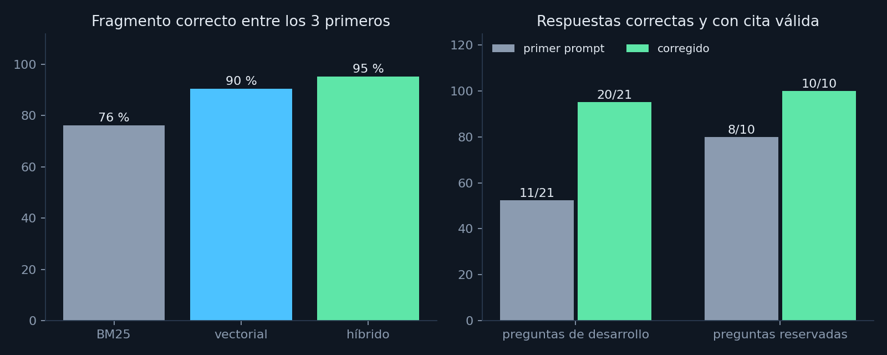

RAG evaluado
Que la IA cite o que calle
Con documentos que cambian de versión, ¿cómo evitar una respuesta convincente sacada de la versión equivocada?
Modelos qwen2.5 7B · nomic-embed-textDónde corre En localDatos Corpus ficticio
95 %fragmento correcto entre los 3 primeros
20/21respuestas correctas en desarrollo
10/10en preguntas reservadas
9/9veces se niega cuando no hay respuesta
El problema
Un modelo de lenguaje contesta con la misma seguridad cuando sabe y cuando no. En pliegos y procedimientos, mezclar versiones es un error caro.
La solución
- Filtro duro por documento y versión antes de buscar.
- Búsqueda híbrida: palabras (BM25) y significado (vectores).
- La cita debe ser literal; si no, la respuesta se rechaza.
- Una persona aprueba antes de dar nada por válido.
Qué aporta
Se puede auditar cada respuesta: de qué fragmento sale y qué se probó.
Resultados medidos

Ejecuciones reales, incluidos los fallos
Pruébalo con tu documento
Versión ligera en tu navegador: búsqueda por palabras (BM25), sin modelo. Nada se envía.
Límites. La primera versión acertaba 11 de 21 porque dejaba respuestas vacías. El corpus (36 fragmentos) es pequeño e inventado: mide el método, no el rendimiento con documentos reales.